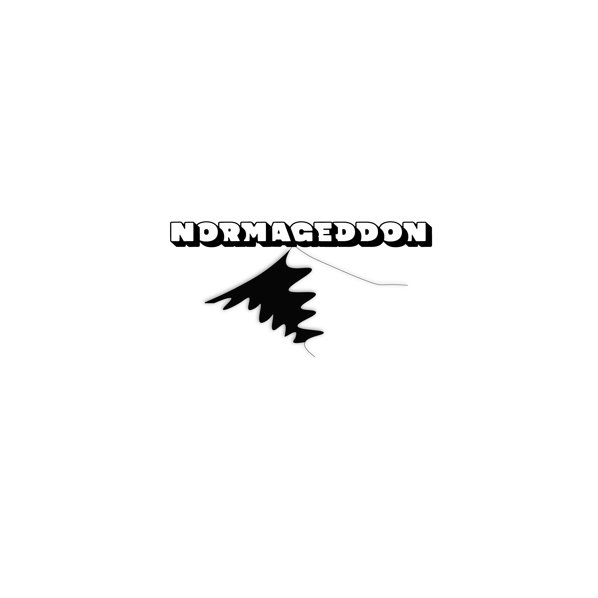

Deltag i genlotteriet
Lær mere om, hvad du skal være opmærksom på, hvis du ønsker at manipulere din genetik.
Lær mere
Skal mennesker kunne mere eller mindre? Skal vi yde mere eller mindre? Lige nu sker en århundreders kulturel tovtrækning om menneskers plads i Verden og funktion i samfundet. Orienter dig her for at følge med i samfundstransformationen
Lær mere om, hvad du skal være opmærksom på, hvis du ønsker at manipulere din genetik.
Lær mere
Indberet dine observerede normbrud, hvorefter adfærden vurderes egnet eller uegnet til at indgå i den kommende og opdaterede udgave af vores samfundskontrakt.
IndberetVi bestræber os på at være så anonyme som muligt.
Minister for Arbejdsglæde og Samfundssind beder borgerne om at stresse ned.

Følg med i debatten om work life balance, hvor vigtige stemmer får lov til at definere, hvordan andre bør have det.

Læs om de tre Neurotyper under Samfundets Stjernehimmel, og lad dit neuroskop guide dig gennem julen.
Glem standardindstillingerne & oplev Mennesket X™.
Nu med 300% hurtigere tankeprocesser og 0% tålmodighed...

Af Jette Gladriksen, minister for Arbejdsglæde og Samfundssind
Der findes næppe et eneste dansk frokostbord, hvor nogen ikke har erklæret sig “rundt på gulvet.” Men i Danmark står vi sammen — også når det går lidt hurtigt.
Det er et tegn på engagement. Det er et udtryk for, at danskerne stadig vil yde, stadig vil bidrage, stadig vil tage ansvar.
Men vi skal også passe på, at omsorgen ikke bliver en sovepude. Travlhed er ikke sygdom.
Vi skal forædle den. Bruge den som energi og som brændstof til vores fælles fremtid.
Danmark har brug for flere, der melder sig klar, ikke flere der melder sig syge.
Det er skabt til at stå op. Og netop derfor bør vi genopfinde stress som en ressource, ikke en sygdom. For hvor ville Danmark være i dag, hvis vores forfædre havde sygemeldt sig, hver gang de følte sig pressede?
Som vi siger i ministeriet: Lev med det.
Et neuroskop for dem, der ikke tror på stjerner, men som stadig mærker systemets dårlige energi. Find din neurotype og læs hvilken energi december bringer dig.
Du lyser for stærkt i en måned, hvor alle skal glimte ens. Stigmatiseringen drysses over dig som sne – smukt, men kvalmende, når den smelter ind i huden. Marginaliseringen kaldes omsorg: “Pas nu på dig selv,” siger de, mens de pakker dig væk i effektivitetens gavepapir. Ekskluderingen er din kalender: alt for fuld, alt for tom. Diskriminationen serveres som ros for din energi – men kun, når den kan bruges. Den 23. vil du føle, at din ild bliver til kul i systemets pejs. Men vid, at aske også er stof, som universer bygges af.
Du står midt i julebyen, hvor alt flimrer, men intet stemmer. Stigmatiseringen klædes i fløjl: “Du virker lidt lukket?” – som om åbenhed var et krav til eksistens. Marginaliseringen er lydløs, men systematisk, præcis som et Excel-ark over accept. Ekskluderingen føles som at blive placeret udenfor, selv når du sidder midt i rummet. Diskriminationen er strukturel – forklædt som fleksibilitet. Men i mørket, hvor andres ord falmer, står du skarpt som en kode, der nægter at lyve. Den 24. bryder du tavsheden – ikke blot med ord, men med sandhed.
Du bevæger dig gennem december som en reklame for stabilitet. Stigmatiseringen mærkes først, da du indser, at normalitet er blevet et museum, du selv vogter. Marginaliseringen er subtil: du bliver den, der taler om fællesskab, men ikke længere forstår det. Ekskluderingen føles ny – men det er bare verden, der ikke længere danser efter din rytme. Diskriminationen smager af tab af selvfølgelighed. Den 25. vågner du og savner en kamp, du aldrig behøvede kæmpe. Universet svarer ikke – det afventer, at du endelig mærker stilheden, som andre kalder overlevelse.
Nu med 300% hurtigere tankeprocesser og 0% tålmodighed.
Føl alt. Tænk for meget. Gør det alligevel.
Slip for manualen – intuitionen er indbygget.
Kreativitet uden pauseknap. Impuls med integreret innovation.
Designet til meningsfuld uro og produktiv ekstase.
Tænk hurtigere. Mærk stærkere. Eksistér vildere.
⚡ Kun i november: Gratis hyperfokus inkluderet ⚡